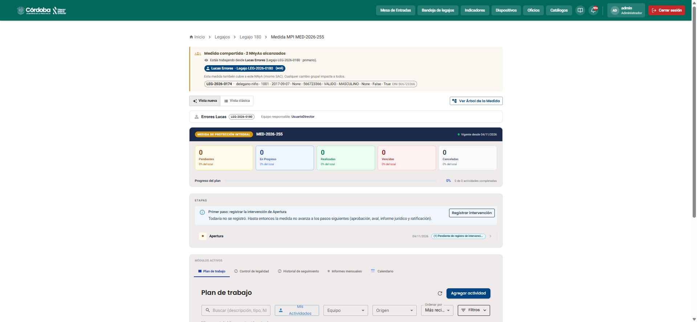
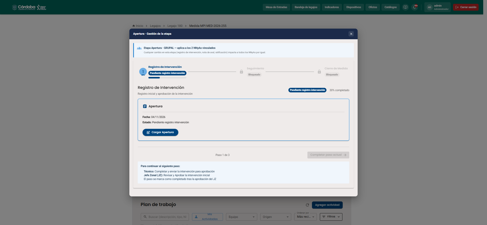
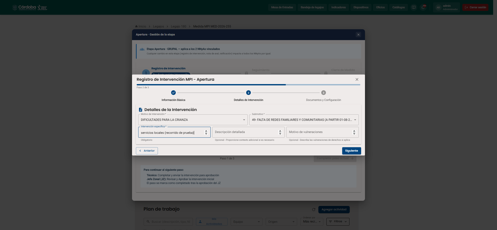
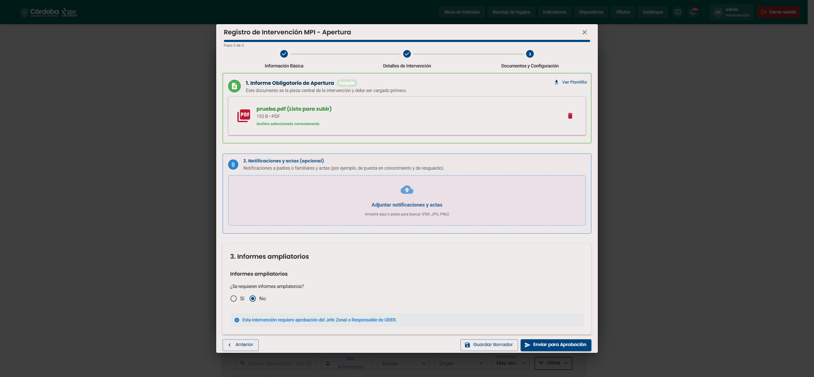
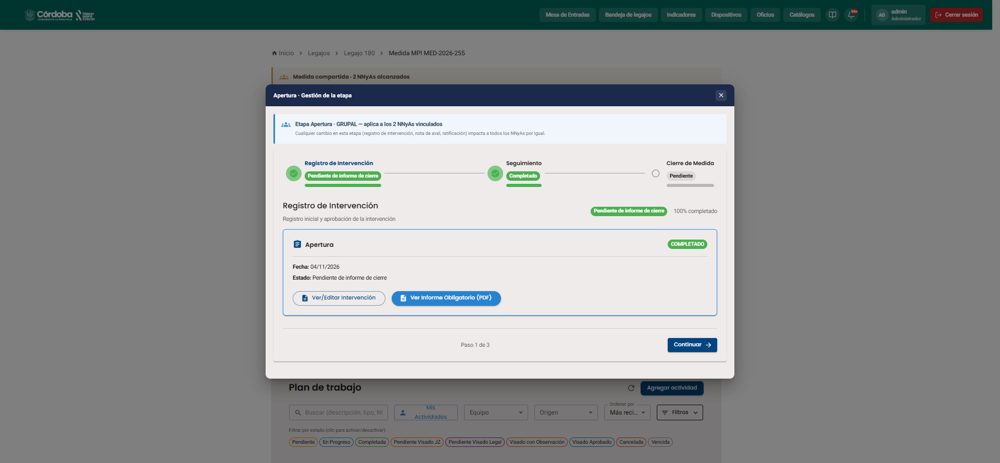
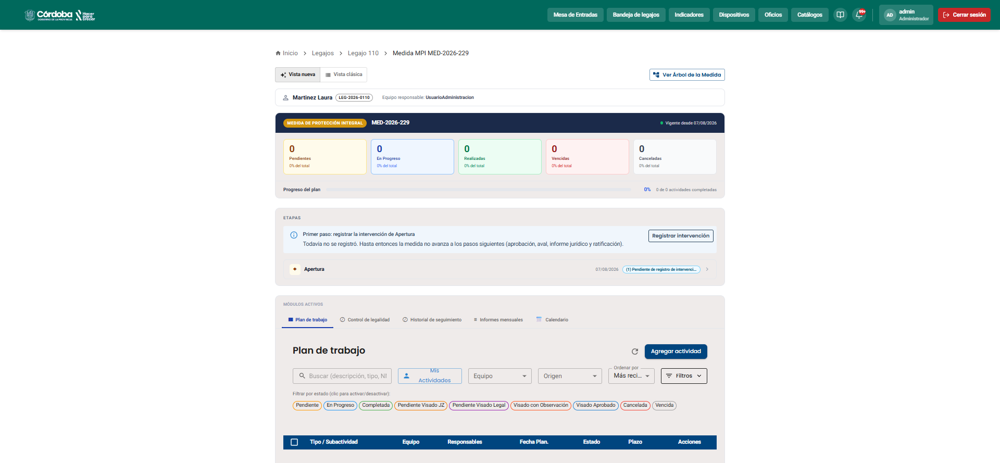

La MPI la toma la SENAF y su apertura es más simple que la de la MPE: el técnico registra la intervención y el Jefe Zonal la aprueba. No hay aval, informe jurídico ni ratificación judicial.






Hacé clic en cada paso para ver quién lo hace.